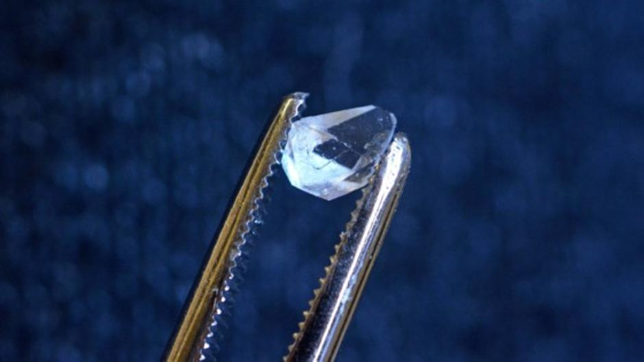

Un cristal temporal, cristal en el tiempo, o cristal de espacio tiempo es un sistema abierto no equilibrado con su entorno que exhibe la simetría de traslación de tiempo rota (TTSB). Es posible que un cristal de tiempo esté en equilibrio con su entorno. La idea de un cristal de tiempo fue propuesta por primera vez en 2012 por el premio Nobel y profesor del MIT Frank Wilczek. 2Los cristales temporales extienden la simetría tridimensional ordinaria vista en los cristales para incluir la cuarta dimensión del tiempo; un cristal de tiempo rompe espontáneamente la simetría de traslación en el tiempo. El patrón del cristal no se repite en el espacio, sino en el tiempo, lo que permite notablemente que el cristal esté en movimiento perpetuo. 3Los cristales temporales están estrechamente relacionados con los conceptos de energía del punto cero y el efecto Casimir dinámico
En octubre de 2016, investigadores en la Universidad de Maryland, afirmaron haber creado el primer cristal temporal discreto. 22Utilizando la idea de la propuesta de marzo, atraparon una cadena de iones 171Yb+ (ytterbium) en una trampa de Paul, confinados por campos electromagnéticos de radio frecuencia. Uno de los dos estados de espín fue seleccionado por un par de rayos de láser. Los láseres fueron pulsados, con la forma del pulso controlado por un modulador acusto-óptico usando la ventana de Tukey para evitar demasiada energía en la frecuencia óptica incorrecta. Los estados de electrón hiperfinos son llamados 2S1/2 |F=0, mF = 0⟩ and |F = 1, mF = 0⟩. Los diferentes niveles de energía de estos son muy cercanos, separados por 12.642831 GHz. Diez iones enfriados por doppler fueron usados en una línea de 0.025 mm de largo. Los iones estaban acoplados entre ellos. Los investigadores observaron una oscilación subatómica. El experimento también mostró la "rigidez" del cristal temporal, donde la frecuencia de oscilación permanecía sin cambios incluso cuándo el cristal de tiempo era perturbado. Sin embargo, si la perturbación era demasiado grande, el cristal temporal se "fundía" y perdía su oscilación.

Video explicativo
Para un mayor conocimiento del tema
Primer cristal del tiempo grabado
Para un mayor conocimiento del tema
Un equipo de investigadores de Alemania y Polonia acaba de marcar un nuevo hito en Física al conseguir, por primera vez, capturar en vídeo a un cristal de tiempo. Con la ayuda de un potente microscopio electrónico de rayos X, en efecto, los científicos lograron filmar el extraño comportamiento de uno de estos objetos, que hasta 2016 se consideraban puramente teóricos. El extraordinario avance se acaba de publicar en 'Physical Review Letters'.